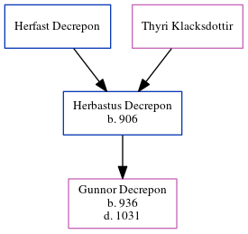

Herbastus Decrepon 906 -
[ Home ] | [ Calendar ] | [ Surnames Index ] | [ Census Index ] | [ Family History ]The child of Herfast Decrepon and Thyri Klacksdottir, Herbastus Decrepon, the 31 times great-grandfather of Michele Copp (née Phillips), was born in Normandy, , , France in 9061. He had 1 child, Gunnor.
He died in Arques, Seine Inferieure, Normandy, France.
Parents
Children
- Gunnor was born in 936
Citations
- Millennium File Online publication - Provo, UT, USA: The Generations Network, Inc., 2003.Original data - Heritage Consulting. The Millennium File. Salt Lake City, UT, USA: Heritage Consulting.Original data: Heritage Consulting. The Millennium File. Salt Lake City, UT, USA
Family Tree
Generated by ged2site. Last updated on Jun 6, 2024